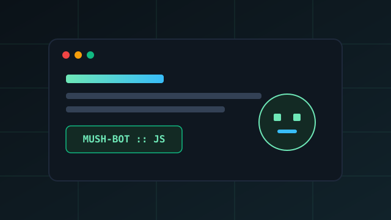
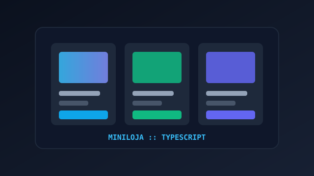
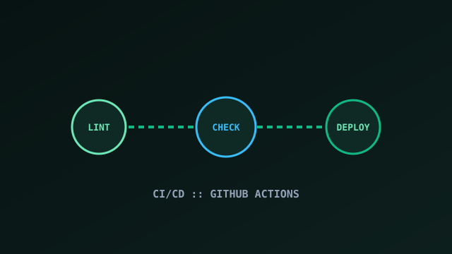

Front-end & Web
HTML5 semântico, CSS3 responsivo, TypeScript e JavaScript moderno.
Desenvolvedor focado em aplicações Web com JavaScript e TypeScript, automação de processos e entrega contínua com GitHub Actions.
HTML5 semântico, CSS3 responsivo, TypeScript e JavaScript moderno.
Node.js, criação de bots, scripts de linha de comando e testes automatizados com Jest.
Git, fluxo de Pull Requests, proteção de branch, linters automatizados e GitHub Actions Pages.
Padronização técnica, revisão de links e ativos, otimização de imagens e segurança em pipeline.

Bot desenvolvido em JavaScript com foco em automação de comandos, eventos e integração contínua.
Acessar repositório
Aplicação de vitrine e carrinho desenvolvida em TypeScript com tipagem estrita e organização modular.
Acessar repositório
Esteira automatizada com validação de Pull Requests, matrix Node 18/20, auditoria de arquivos e deploy Pages.
Acessar repositórioConecte-se pelos canais oficiais abaixo para acompanhar códigos, projetos e automações.